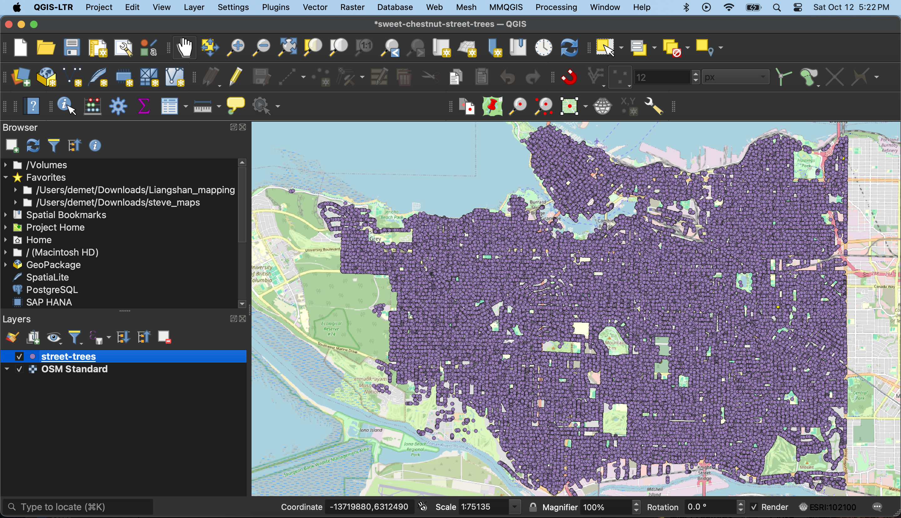

This is a very sparse outline of what I did incase it's of any interest. If so, I can absolutely flesh my process it out further.
1. Go to
Vancouver Open Data Portal and download the entire dataset as a geoJSON file.
2. Open
QGIS, a free and open-source geographic information system (GIS), and load in the data. (See
here for documentation.)

3. Delete the errant point in kazakhstan by toggling on edit mode, selecting the point on the map canvas, and deleting it. save changes and toggle off editing mode
4. Open the Attribute Table of your data layer and run a selection query to select all edible chestnut trees from the dataset.
Toggle the Attribute Table view to see only the selected rows.
5. Return to your map canvas. Right click your layer. Export selection as new geoJSON file.
6. It should also add to your map canvas. Close QGIS (saving your project if you wish).
7. Use
Leaflet to create a webmap. (See
here for documentation.) I also created a Github Repository first, cloned it to my computer, and then worked from there.